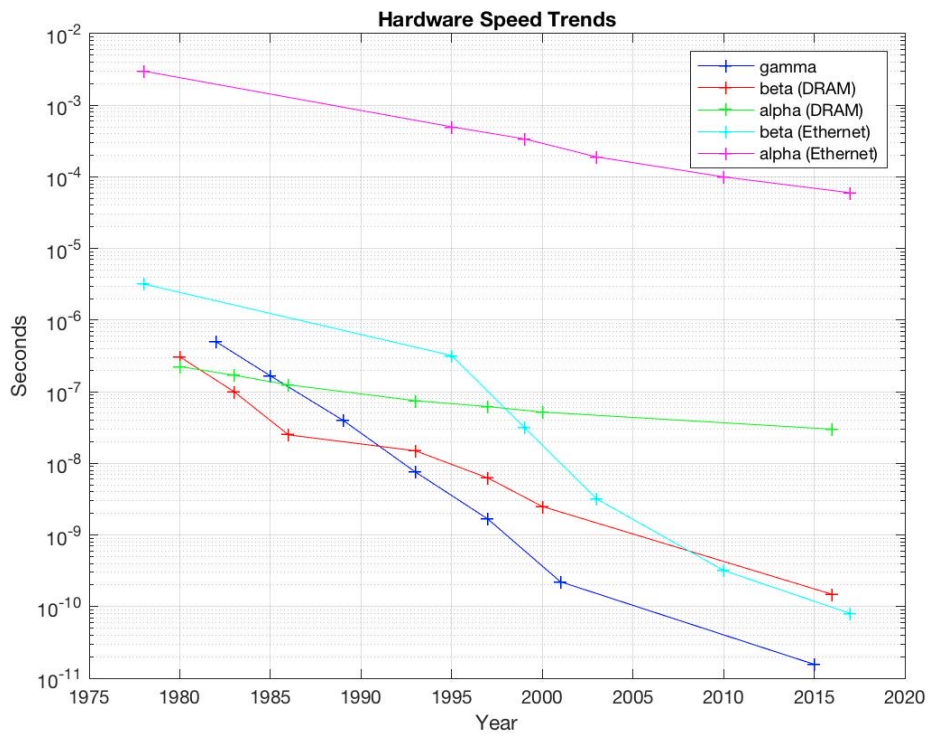

The cost of communications
Last updated: 2025-09-08.
Disclaimer
This post was originally supposed to be a short introduction within my first post on GPU kernel optimization, but then I realized that I liked to talk too much about it and went out of scope. This is almost exclusively inspired by this brilliant talk: Communication-Avoiding Algorithms for Linear Algebra, Machine Learning and Beyond by Prof. James Demmel (UC Berkley), as well as a the his 2022 CS267 class website with free lectures on YouTube.
Note The terms communications and memory transfers will be used interchangeably. Also in the present context, a word refers to a single FP64 number.
Hardware trends
Looking at Figure 1, memory transfers, within DRAM, or over the network, have been more expensive than a (FP64 FMA) math operation since ~1992:  Figure 1: Evolution of the time per flop (gamma), inverse bandwidth (beta) and latency (alpha) between ~1980 to ~2015. Source.
The graph stops around 2015, where the ratio of gamma to beta (DRAM) was around 10. Let's look at the current FP64 Flop Per Load (FPL) factor, i.e. the average amount of FP64 operation you can do in the time that it takes to load one (non-cached) word from DRAM, for recent GPUs:
| GPU | Release Year | FP64 FLOPS (TFLOPS) | BW (TB/s) | FP64 FPL |
|---|---|---|---|---|
| Nvidia V100 | 2017 | 7.066 | 0.897 | ~65 |
| Nvidia A100 | 2020 | 9.746 | 1.56 | ~49 |
| AMD MI250x | 2021 | 47.85 | 3.28 | ~116 |
| Nvidia H100 | 2022 | 25.61 | 2.04 | ~ 100 |
| AMD MI300A | 2023 | 81.72 | 10.3 | ~63 |
| Nvidia B200 | 2024 | 62 | 8.20 | ~60 |
Table 1: Evolution of the BW, FP64 flops and FPL for recent GPUs. FPL is computed as \(\frac{FP64 \ Flops}{BW}*8\) since a FP64 number is made of 8 bytes.
Note: Modern GPUs such as the one in this table make up for the overwhelming majority of the computational capacity of the world's top supercomputers.
As we can see, the FPL has been varying between ~50 and 100. This is really large, and should motivate you to think really hard about how you access memory. In particular, you should avoid memory transfers, or communications as much as you possibly can. This is the idea behind communication avoiding algorithms research which lead to the development of the BLAS standard, the Lapack library, and much more.
Some naming conventions
I want to clarify some conventions, and push for the use of clear terminologies when talking about numerical algorithms. Let's take some time to realize that the following terms refer to very different things (inspired by Mark Hoemmen's PhD introduction):
- An operation is a theoretical construction for data transformation that takes an input, and produces an output, e.g. matrix multiplication, a stencil operation, a linear system resolution. It exists in the realm of ideas, may have interesting properties but does not refer to specific way to achieve to the result.
- An algorithm: (for an operation) is a sequence of instructions and so-called kernels, that may be written in pseudo-code, that describes a way how to get the result of an operation. Different algorithms may give different results for the same operation (even in exact arithmetic). For example, think about direct solvers vs. iterative solvers.
- An implementation: (of an algorithm) is a concrete, existing piece of code that, well, implements an algorithm. It may be in done in any language. Different implementations should give the same results in exact arithmetic for a given algorithm, but can give different results in finite arithmetic because of e.g. hardware/runtime details that affect the ordering of operations.
When writing an algorithm, you always have to rely on building blocks, or kernels. The notion of kernel is relative to the level of abstraction you are working with. In particular:
- If you are designing a CFD solver, solving a linear system may be seen as a kernel.
- If you are designing a linear system solver, performing a vector dot-product, or a matrix-vector multiplication may be seen as a kernel.
- If you are designing a vector dot-product, loading data and performing multiplication and additions may be seen as a kernel.
- If you are designing a floating-point addition, register manipulation may be seens as a kernel.
The level of abstraction is reflected in the implementation which may rely on high-level libraries that already implements the kernels, so that you don't have to.
Note: In the context of GPU programming such as my my first post, kernel often refer to the level 2. of abstraction, i.e. an algorithm for which the implementation fits in a single CUDA kernel, or equivalently within a Kokkos::parallel_for.
A simple memory model
One result that I like a lot is the one presented in the second CS267 lecture where the following simple memory model is proposed:
- Assume a simple machine with just 2 levels of memory, fast and slow (think of e.g. DRAM / registers) and the following properties and notations:
- \(M=\) number of words that fits into fast memory,
- no latency (simplifying assumption),
- \(t_m=\) time per slow memory operation i.e. to move a word from fast to slow memory (inverse BW from Table 1 multiplied by 8 in our case since we are doing FP64 and ignoring latency),
- \(t_f=\) time per arithmetic operation i.e. the inverse of the FLOPS in Table 1.
- Assume an implementation of an algorithm, for which the runtime on the machine is characterized by:
- \(m=\) number of words moved between fast and slow memory to complete the algorithm,
- \(f=\) number of arithmetic operations to complete the algorithm.
We can then define \(CI_{\text{runtime}}=\frac{f}{m}\), a property of the runtime of an implementation of the algorithm that is called the computational intensity. It is the average number of flops per slow memory access. While the previously defined FPL factor, a property of the machine, is given as \(FPL_{\text{hardware}}=\frac{t_m}{t_f}\).
Note: Nvidia GPUs have 4 levels of memory: DRAM, L2 and L1 caches, and registers. Each level has ~3-4x difference in bandwidth. Some CPUs have 5 levels with an additional L3 cache. Real memory models are super complicated ! However, it is clear that memory hierarchies are omnipresent and that thinking hard about them helps both CPU and GPU performances.
Getting good performance
The minimum possible time for our algorithm is \(t_{\text{ideal}}=ft_f\), which is attained when the problem fits in fast memory (\(m<M\)) and no slow memory transaction are required. This implies that we don't read any initial data from slow memory nor store in it, this is never the case in practice.
Let's compare this to the real time for a big enough problem \(t_{\text{real}}=ft_f+mt_m\) which rewrites:
\(t_{\text{real}}= t_{\text{ideal}}(1+\frac{FPL_{\text{hardware}}}{CI_{\text{runtime}}})\)
It is now clear that to get near optimal performance, we want to reduce the ratio \(\frac{FPL_{\text{hardware}}}{CI_{\text{runtime}}}\) as much as possible. Since \({FPL_{\text{hardware}}}\) is a property of the hardware, with a value ranging between 50 and 100 depending on the GPU considered, all we can do is try to reduce \(\frac{1}{CI_{\text{runtime}}}=\frac{m}{f}\), by trying to reuse the data we load as much as possible.
Properties of the runtime vs. properties of an implementation
I insist on using the terminology "properties of the runtime (of an implementation (of an algorithm (for an operation)))". Indeed, in practice, the numbers \(f\), \(m\) and \(CI_{\text{runtime}}=\frac{f}{m}\) should not be obtained by simply computing the ratio of how much memory should be touched, and how many operation should be done ideally, optimally for a given operation. Because most real problems do not fit in cache. Instead, these numbers are a property of how the algorithm is implemented, compiled and ran;
- Operation count for an operation can vary dramatically between a naive and a smart algorithm.
- Performance of an algorithm can vary dramatically between a naive and a smart implementation.
- Performance of an implementation can vary dramatically between a "release" build and a "debug" build, and between machines of different quality.
A big chunk of the implementation work is to force the compile-runtime pipeline to deliver the values of \(f\) and \(m\) that you desire. In this sense, I find CPU optimization is harder than GPU optimization because the gap between the implementation and the runtime is wider. In GPU programming, you are writing native SIMD code, and you can control the L1 cache via shared memory. For CPU programming, you cannot control the cache, and using SIMD instructions is a pain. Also, the Nvidia profilers are just fantastic. But this could be (and probably is) an exposition bias from me. Most research papers talk about \(f\) and \(m\) as properties of the algorithm. This makes sense and is a useful approximation, but does implicitly assume that the algorithm is perfectly implemented. In reality, you have to write code and hope that the compiler/runtime does a good job of doing what you want it to do.
Let's consider the example of a very well-studied operation: the \(n\times n\), dense matrix multiplication, C+=A.B (1st homework of CS267 and topic of the 2nd and 3rd lectures).
If three matrices fits in fast memory, we know that that we need to load/store only \(4n^2\) words (3 matrix read, 1 matrix write) from slow memory, and perform \(2n^3\) operations (one dot product per element of C, each dot product being \(n\) multiply and \(n\) add) with a resulting \(CI_{\text{ideal}}^{\text{matmul}}=\frac{n}{2}\). The bigger \(n\) is, the closer we get from ideal performance. However, as \(n\) grows, it is clear that the problem will eventually not fit in fast memory (\(3n^2>M\)). A naive implementation of matrix multiply is:
for i in range(n):
#load A[i,:] from fast memory (n words)
for j in range (n):
#load B[:,j] from fast memory (n words)
#read C[i,j] from fast memory (1 word)
C[i,j] += dot(A[i,:], B[:,j]) #(2n+1 operations)
#store C[i,j] in slow memory (1 word)
#Total:
# m = n^2 + n^3 + 2n^2 --> n^3,
# f = n^2 + 2n^3 --> 2n^3.
It has a computational intensity of \(CI_{\text{naive}}^{\text{matmul}}=\mathcal{O}(2)\), which is terrible ! (compared to the ideal value). On the other hand, the well-known blocked implementation that splits and iterates over \(b\times b\) sub-blocks of the matrices:
#pick a block size b that fits in cache (3b^2<M)
N=n/b #compute block size
for i in range(N):
for j in range (N):
#load the ijth block from C into fast memory (bxb words)
Cblock=...
for k in range (N)
#load the ijth block from A into fast memory (bxb words)
Ablock=...
#load the ijth block from B into fast memory (bxb words)
Bblock=...
Cblock += matmul(Ablock, Bblock) #naive matmul, or micro kernel that fits in cache / registers (2b^3 + 2b^2 operations)
#store the ijth block from C into slow memory (bxb words)
#Total:
# m = N^2( 2b^2 + N(2b^2) ) --> 2N^3b^2= 2n^3/b
# f = N^3(2b^3+2b^2) --> 2N^3b^3 = 2n^3
has a computational intensity of \(CI_{\text{blocked}}^{\text{matmul}}=\mathcal{O}(b)\), assuming that the blocks fit in fast memory. So, you might wonder, what should I do ? How do I know if there is a better algorithm ? Well, a theoretical upper bound on the computational intensity has been found and is given by \(CI_{\text{blocked}}^{\text{matmul}}=\mathcal{O}(\sqrt{M})\), and if you ever write a new dense matmul implementation, you should strive to reach it. And notice ! the blocked algorithm reaches that bound. Indeed, since the blocks fit in fast memory, \(3b^2 <M\) \(\implies\) \(b=\mathcal{O}(\sqrt{M})\).
This is the whole point of communication avoiding algorithms research: computing lower bounds and finding algorithm that reaches them. Again, if you find this interesting, consider looking at this brilliant introduction.
Conclusion
Well, all that is quite fascinating, but also overwhelming don't you think ? Well, you might not have to think about all this lower bound theory to get good speedups. In my first post on GPU kernel optimization I go over frequent coding mistakes that leads to extra useless communications. In that post, I will not give guidelines to reach theoretical lower bounds for your case. This is just too general to be discussed in a blog-post. As we saw, it constitutes a research topic on it's own and implies a deep re-thinking of the algorithms and data structures. No, here we will stay simple and focus on the following: given a GPU kernel, what frequent coding mistakes should we avoid to limit the amount of data we load/store from slow memory.
Special thanks
Thanks to Ivan Huard (EPITA) for providing feedback.